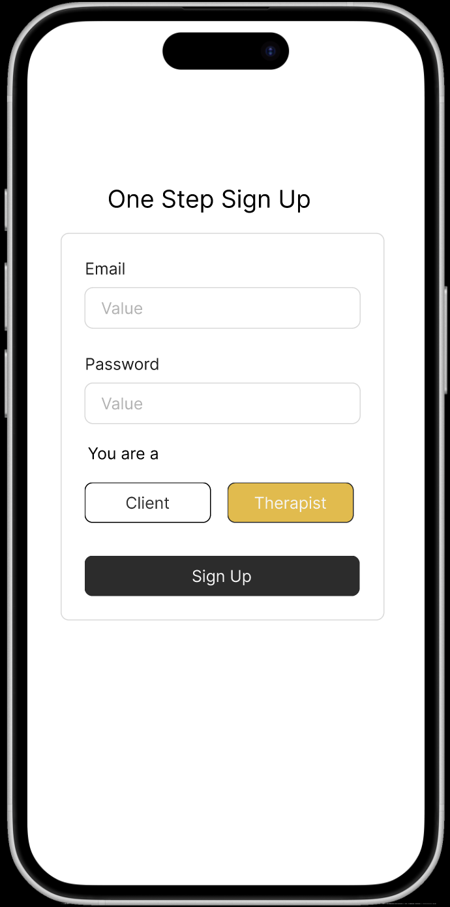
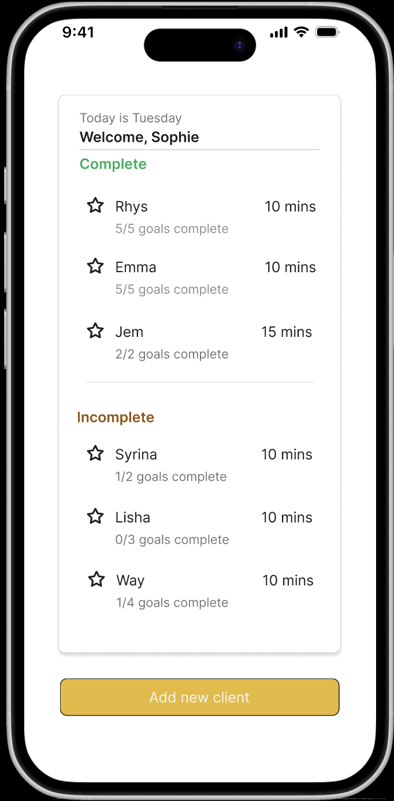
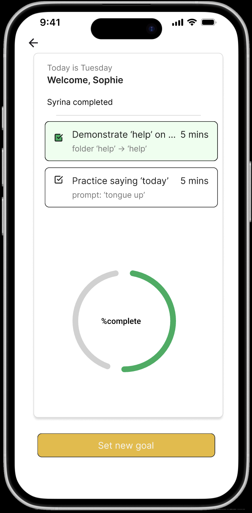
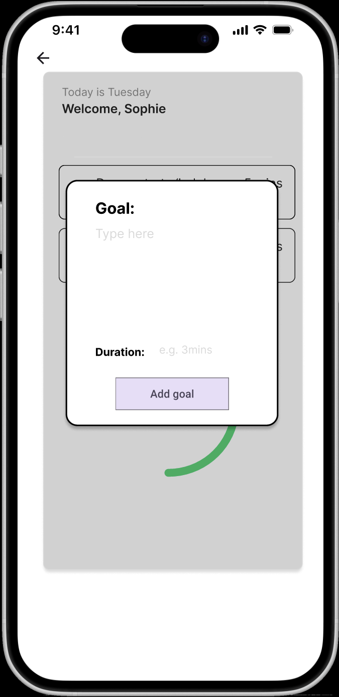
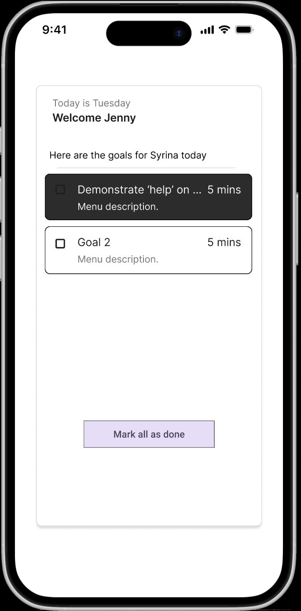
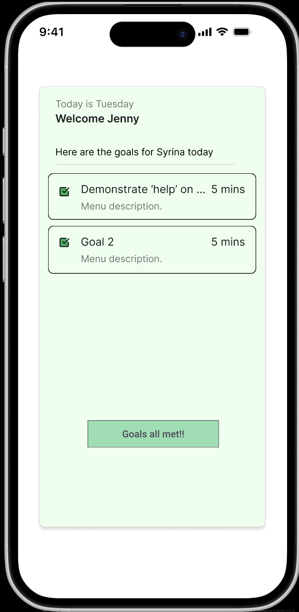

A reminder app bridging therapists and clients with intuitive, accessible, and goal-oriented design.

Principle: Progressive Disclosure & First-Time User Experience
The homepage uses bold typography and centered CTAs to guide new users. Minimal text reduces cognitive load, while the “Get Started” button employs high contrast (WCAG AA compliant) for accessibility and immediate actionability.

Principle: User-Centered Task Flow & Hick’s Law
Therapists see only relevant metrics: active clients, upcoming sessions, and pending goals. Navigation is reduced to essential tabs, minimizing decision fatigue and supporting efficient workflow management.

Principle: Effective Use of Charts & Affordance
Progress is visualised via intuitive line graphs with color-coded trends (green = improvement). Interactive tooltips provide details on hover, enabling quick scanning without overwhelming the interface.

Principle: Form Simplicity & Input Constraints
The form uses labeled inputs, placeholders, and a stepper pattern to prevent errors. Required fields are marked, and real-time character counters guide concise, actionable goal-setting.

Principle: Emotional Design & Gamification
Clients are greeted with their name, a progress streak, and encouraging micro-copy (“You’re on day 3!”). Visual rewards (badges, checkmarks) reinforce habit formation and therapeutic adherence.

Principle: Feedback Loop & Closure (Zeigarnik Effect Mitigation)
Upon task completion, users receive immediate, celebratory feedback with animation and confetti. This reinforces accomplishment and psychologically closes the open loop of unfinished goals.